Describe anything.
An engineer-grade agent builds it as real, editable CAD: a parametric design in a real CAD kernel, checked on the solid, ready for your CAD program, a CNC shop, a render or your slicer.
The app is drawn here with scripts on: a sensor case, built feature by feature by the CAD kernel.
The app, drawn in this page. The solid is the CAD kernel’s own, the checks and the slice are the engine’s. Drag the part, choose a line of the program, press 1 to 4 to open the conversation.
What it makes
Mechanisms, products,
shells and game assets.
Every picture is a real build: an original design written as parametric code, built by the CAD kernel and rendered from its own geometry.
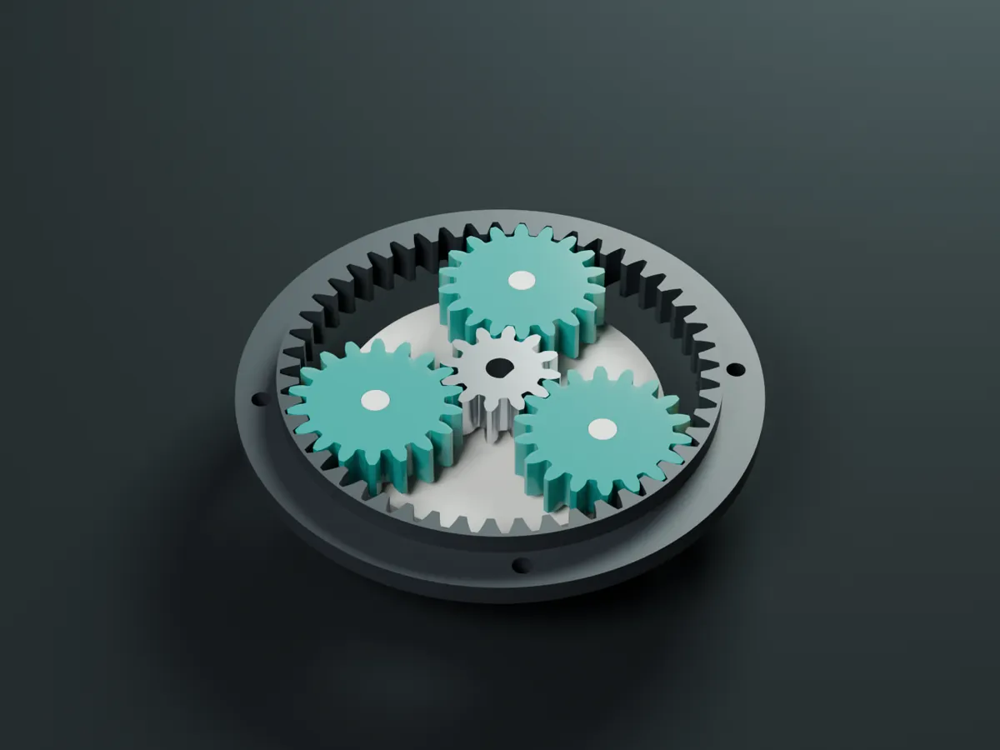
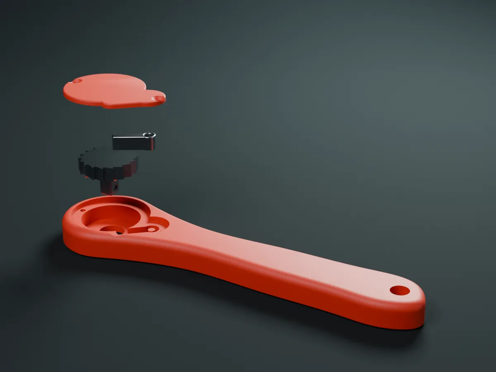
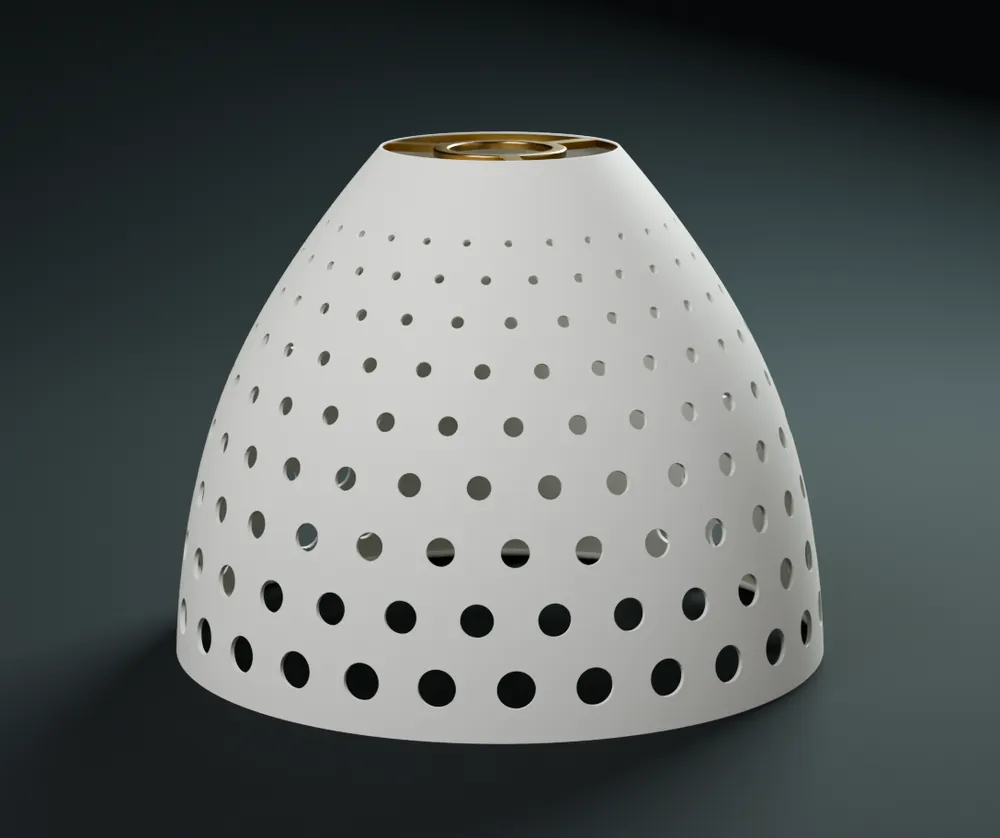
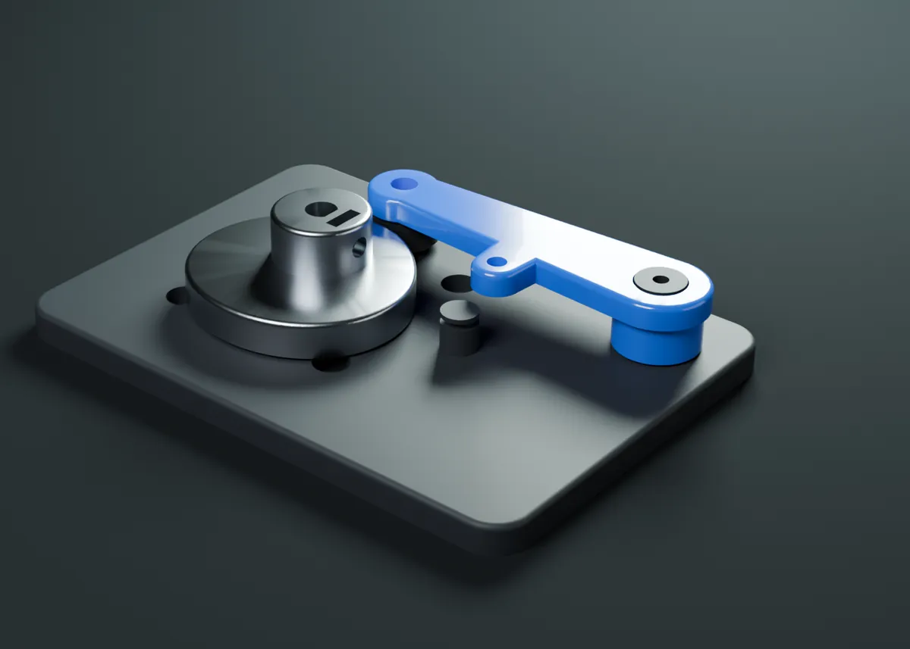
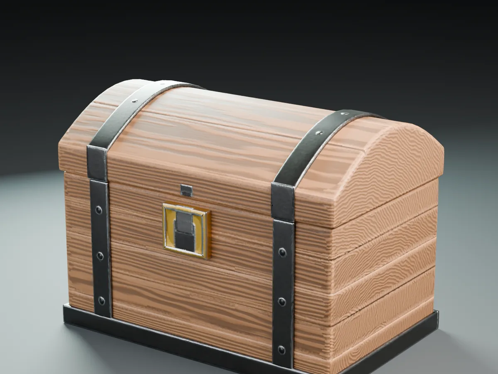
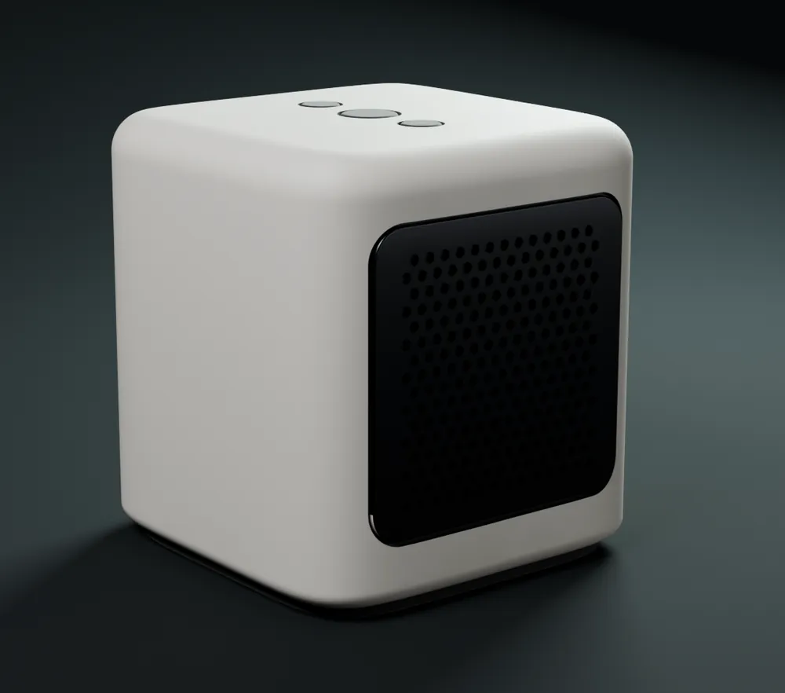
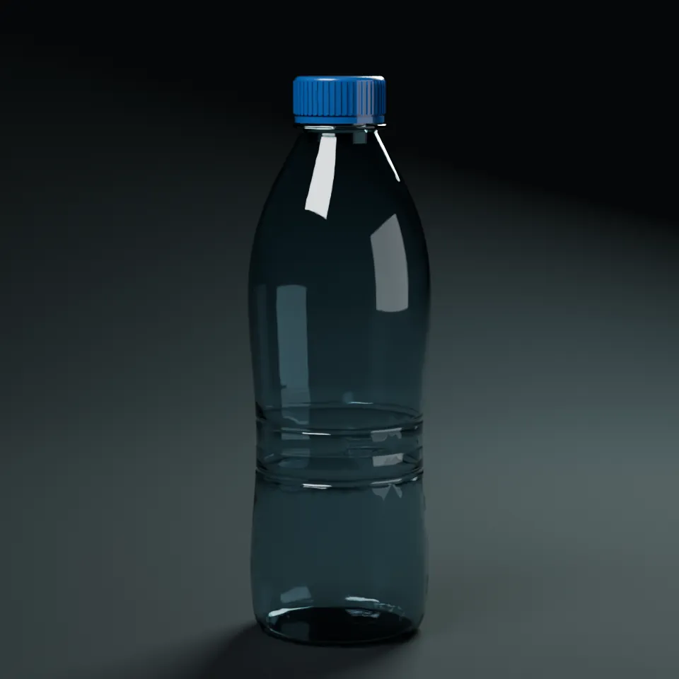
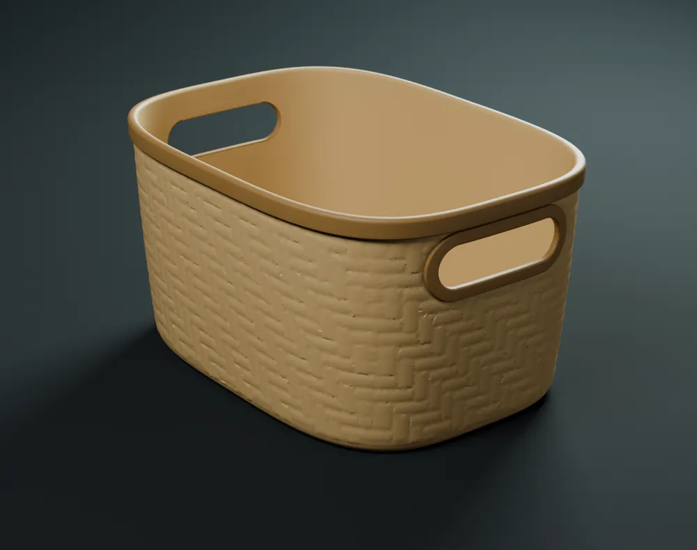
How it works
From a sentence to a part
you can trust.
- 01
Describe it
Words, a photo with a coin for scale, a sketch, a part or a link. A 3D model, or something to print.
- 02
It is built as real CAD
An agent writes a parametric design; build123d on OpenCascade builds the solid, feature by feature.
- 03
Every revision is checked
A valid solid, a closed mesh, the STEP round trip, fits and joints; walls and overhangs when you print. Each result says how it is known.
- 04
Made the way you need
STEP for CAD and CNC, OBJ and GLB for renders. If you print, your slicer writes the G-code and every layer plays back first.
The proof sheet
A brief is
a contract.
The numbers in your brief become requirements. They are audited by arithmetic before any code is written, then measured on the kernel's solid after every build. A red row names the feature that owes it, and one edit rebuilds only what changed.
- Requirements
- 4
- Proved at r01
- 3 of 4
- Proved at r02
- 4 of 4
“A flange Ø68 with a Ø20 bore, 4 × Ø5.2 on a 60 mm bolt circle and 2.4 mm walls, 8 mm thick.”
- Ø68 mm boss
- Ø20 mm bore
- 4 × Ø5.2 mm on a Ø60 mm bolt circle
- walls at least 2.4 mm
Between a hole and the Ø68 edge there is 1.40 mm ((68 − 60 − 5.2) / 2); the brief asks for walls of at least 2.4 mm, which needs an outside diameter of at least 70 mm.
Arithmetic on the stated values; nothing measured.The numbers cannot all hold, so there is nothing to build to yet.
- PASSØ70 mm bossØ70 mm (nearest)±0.1 mmdisccomputed
- PASSØ20 mm boreØ20 mm (nearest)±0.1 mmborecomputed
- FAIL4 × Ø5.2 mm on a Ø60 mm bolt circlewanted 4 × Ø5.2 · not met when holes finished, nor after any later feature0 hole(s) Ø5.2 (round holes found: Ø5, Ø20)±0.1 mmholescomputed
- PASSwalls at least 2.4 mm2.5 mm thinnest of 10 samples±0.1 mmedgescomputed
3 of 4 requirements proved, 1 failed
edit_designset_param hole_d = 5.2rebuilt: holes, edges · reused: 2
- PASSØ70 mm bossØ70 mm (nearest)±0.1 mmdisccomputed
- PASSØ20 mm boreØ20 mm (nearest)±0.1 mmborecomputed
- PASS4 × Ø5.2 mm on a Ø60 mm bolt circle4 × Ø5.2 on Ø60±0.1 mmholescomputed
- PASSwalls at least 2.4 mm2.4 mm thinnest of 10 samples±0.1 mmedgescomputed
4 of 4 requirements proved
scripts/proof_demo.py: a script calls the same MCP tools an agent calls. Pass and fail are measured on the kernel's solid of that revision; nothing here is a physical result.Mesh to editable CAD
Bring an STL.
Leave with CAD.
Make editable turns a mesh into a parametric design: real faces, named features and dimensions you can change, verified against the mesh it came from.
Whatever you bring is assessed first. A mechanical part becomes parametric CAD, a smooth sculpt a surface you can edit, a scan a body that exact features are cut into. Imperfect meshes are repaired, and every repair is listed.
- Triangles in
- 3,216
- Dimensions out
- 18 of 18
- From the mesh
- 0.0017 mm
Automatic refinement
Every build gets
a second pass.
After a design builds, Form Studio measures it against what a good product looks like and keeps only the changes that help: material zones, a fillet hierarchy, broken edges. It runs in the background, and the checks that prove function stay exactly as they were.
- Briefs that build
- 22 of 22
- Scores lowered
- 0
- Median time
- 13.6 s
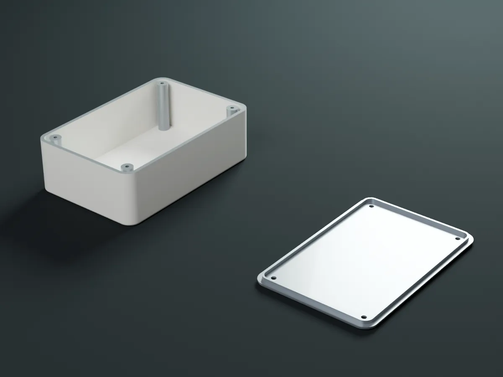
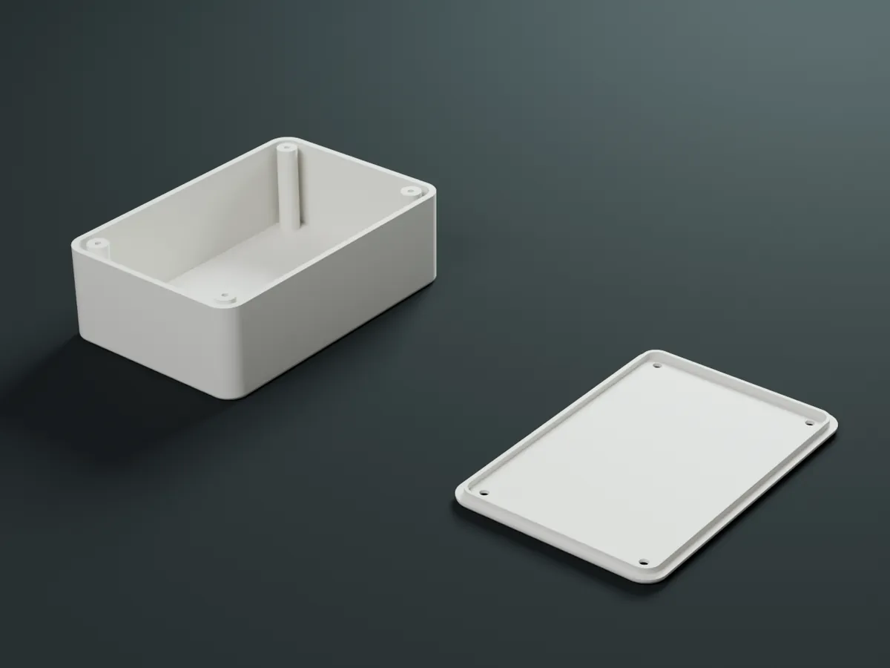
Game assets Beta
Make it
a game asset.
The same design goes on to an engine-ready asset: four levels of detail inside your triangle budgets, UVs, baked textures, a collision hull and a GLB that is read back and validated. Presets for Unreal, Unity, Godot and glTF.
In Beta: every asset passes its technical checks, and its visual quality is still improving.
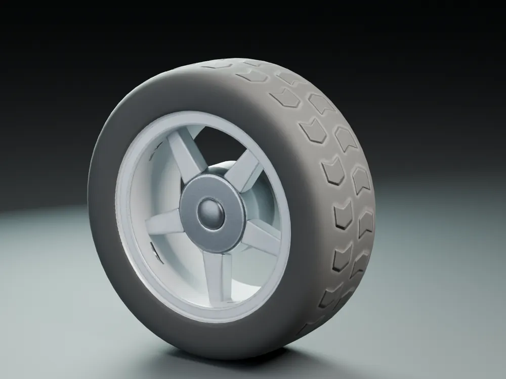
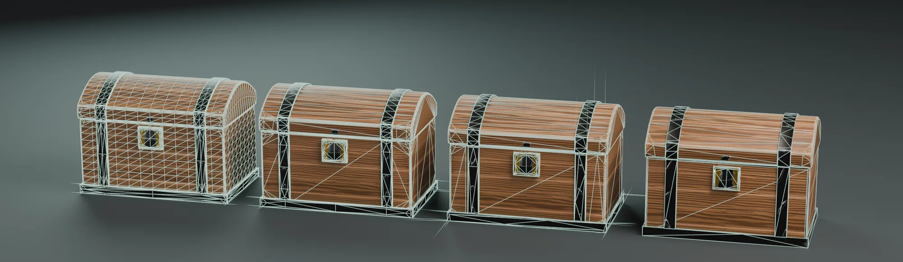
Assemblies
Parts that move are checked moving.
The hinged box is two printed parts on one joint. Form Studio swings the lid through its whole range, checks each position for collisions, then shows how the parts come apart.
- Lid hinge
- 0°
- Range
- Positions checked
Your agent, your computer
Works with the agent you use.
Runs where your files are.
Claude Code, Codex, Gemini CLI, Cursor CLI and more, on model APIs or local models. Everything the window does is an MCP tool and a form command.
Its design practice is written down as skills your agent loads: intake, parametric design, mechanisms, surfacing, textures, remodelling from a mesh, game assets. Long jobs run as tasks while it keeps working.
Form Studio runs on your Mac, Windows or Linux computer and never uploads your files on its own. With a cloud AI agent, the conversation and the renders you share go to that agent's provider. Only you approve a release.
- MCP tools
- 104
- Skills
- 19
- Uploads by Form Studio
- 0
$ form new "Desk stand" device_stand device_width=75.6{ "pipeline": { "state": "done", "steps": [ "Solid: done (0.194 s)", "STEP + STL: done (0.207 s)", "Checks: done (0.516 s)" ] }, "project": { "project": "desk-stand", "head": 1, … "checks": [ "PASS One valid solid: 1 solid [computed]", "PASS Overall size: 70.0 × 115.6 × 88.9 mm [computed]", … ] } }$ form preview desk-stand lean=18{ "buildable": true, "base_rev": 1, "changes": [ "Lean angle: 20 -> 18 deg" ], "derived": [ "Stand height: 92.29 -> 93.24 mm" ], "metrics": [ "Material volume: 145.05 -> 146.24 cm³", "Tip-over force: 1.12 -> 1.16 N" ], … }$ form commit desk-stand lean=18 --expect-head 1{ "pipeline": { "state": "done", … }, "project": { "project": "desk-stand", "head": 2, "parameters": { "lean": "18 deg (assumed)", … }, "checks": [ …, "PASS Overall size: 70.0 × 115.6 × 90.2 mm [computed]", … ] } }form command in an empty data folder, trimmed where you see …. Each step is also an MCP tool.Make something.
Free and open source under the MIT licence. On first start Form Studio sets itself up: the parts libraries, a slicer if you print, an agent and its sign-in.
- macOSApple Silicon
FORM-macos-arm64.zip - macOSIntel
FORM-macos-x64.zip - Windowsx64
FORM-windows-x64.zip - Linuxx64
FORM-linux-x64.tar.gz
curl -LsSf https://raw.githubusercontent.com/kaizensx/form-studio/main/install.sh | shuv tool install --python 3.12 "form-studio[all] @ git+https://github.com/kaizensx/form-studio"